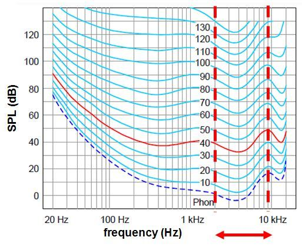

数字音频技术
reference: 《数字音频技术》管恩京
1. 基本声学原理¶
1.1 人耳对声音的主观感受¶
- 响度
- 单位为sone，频率为1kHZ，声压级为40dB时的响度为1sone
- 声压级每增加10dB，响度增加1倍
- 等响度曲线：同一响度下，声压级与频率的关系 
- 音调
- 取决于频率
- 音色
- 取决于频谱结构
1.2 基本物理量¶
- 频率
- 单位为Hz
- 听觉范围在20Hz-20kHz
- 频谱
- 全称为频率密度谱，是频率的分布曲线
- 复杂振荡分解为振幅和频率不同的简单谐振，再排列所得到的图形
- 每个人的声音都有自己非常特别的唯一的频谱结构
- 声压级Lp
- 单位为dB
- \(Lp = 20·lg (P / P_{ref})\)
- \(P_{ref}\)为基准声压力，\(2·10^{-5}Pa\)
- 是一个相对概念
- 为什么数字音频软件里分贝是负数？ 因为采用满刻度电平为0dBFS(0dB Full Scale)，即把最大音量作为参照点
1.3 人耳听觉效应¶
- 掩蔽效应
- 声音能量大的掩盖声音能量小的声音
- 在声压级相近的前提下，中频掩盖高频和低频
- 在声压级相当大时，低频会对高频产生掩盖
- 在声压级不大且响度接军事，高频掩盖低频
- 在延迟时间小于50ms的前提下，先传入人耳的掩盖后传入人耳的声音
2. 音频数字化¶
2.1 数字化基础¶
- 数制：二进制
- 单位：比特（位），单位b；比特率，单位kb/s
2.2 模拟与数字¶
- 模拟
- 信息参数在给定范围内表现为连续的信号
- 优点：具有无穷大的分辨率，不存在量化误差
- 缺点：容易受随机噪声影响，有损的模拟信号几乎不可还原
- 数字
- 离散的信号
- 便于存储、处理和交换
- 模拟数字转换
- 采样
- 奈奎斯特采样定律
- 带宽受限的连续信号可以通过离散的采样点序列替代而不丢失任何信息
- 采样频率至少为信号最高频率的2倍
- 常见的采样频率是48KHz
- 奈奎斯特采样定律
- 量化
- 记录波形位于采样时刻的幅度
- 是将信号的连续取值金思维有限多个离散值的过程
- 取值的数量取决于二进制数据字的长度，即量化位数，单位为b
- 编码
- 脉冲编码调制（PCM）
- 通过抽样+量化+编码实现模拟信号的数字化
- 几乎是无损编码
- 脉冲编码调制（PCM）
- 采样
2.3 编解码器¶
- 有损
- 结合人耳听觉特性和信号处理工程
- 技术：MPEG、AAC、杜比AC-3
- 格式：MP3、WMA、JPEG
- 无损
- 利用数据的统计冗余进行压缩，可完全恢复原始数据
- 好比用zip/rar压缩wav，但不同的是不用解压也能播放源wav
- 技术：APE、FLAC
- 格式：WAV
- 数字音频格式
- CD：天籁
- 44.1kHz/16bit
- .cda文件，只是索引，不包含真正的声音信息
- WAV：无损
- 由微软开发
- 类似的还有苹果的AIFF、UNIX的AU
- MP3：流行
- MPEG标准中的音频部分，分为.mp1,.mp2,.mp3
- 10:1~12:1的压缩率
- MIDI：作曲家
- 记录声音的信息，再告诉声卡如何再现音乐
- 应用于计算机作曲领域
- WMA：最具实力
- 微软研发，比MP3压缩率更高
- FLAC：无损
- APE：无损
- CD：天籁
3. 相关资料（超有趣）¶
《MP3》不在场¶
- 黑胶是Analog。CD是客观的Digital。MP3是主观的Digital
- 数字音频的发展是self- hacking，对自身感官的经济治理，聪明的偷工减料。丢弃的并不是大小而是混乱程度，即熵，使其更容易被压缩
- 数字音频不是对物理世界空气振动的保存，而是经过了一层精巧而无法越过的人体滤镜
《Everything you should know about sound》 WaitButWhy¶
- 波形，并不是我们看到的蛇形波，而是压力波（instead of a curvy snake wave, sound is a pressure wave）
- 声音本身并不是一个东西，他只是一个穿过介质的压力波
- Talking is a miracle. 从声音的发出，传播，大脑解码，一系列复杂过程却近乎本能的发生
- 如果宇宙中充满了空气，那么就会突然之间变得非常响亮，幸好声音不能在真空中传播
- 森林里倒下一棵树，但是没有人听到，这算有声音吗？如果将声音定义为「生物对于压力波的感知」，那么就没有声音，因为虽然产生了压力波，但是没有生物去接受它。